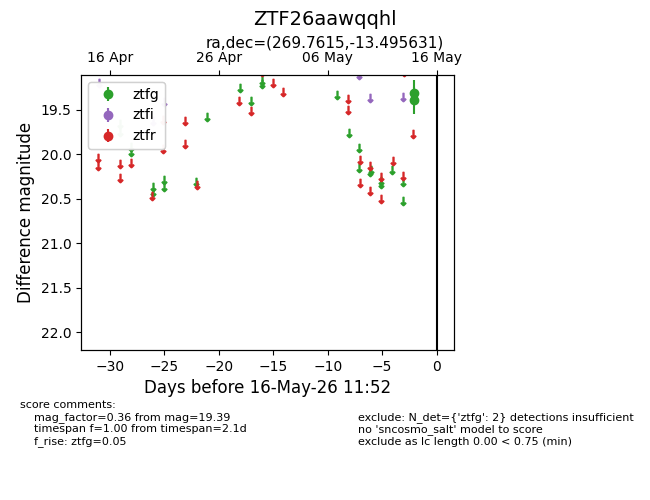
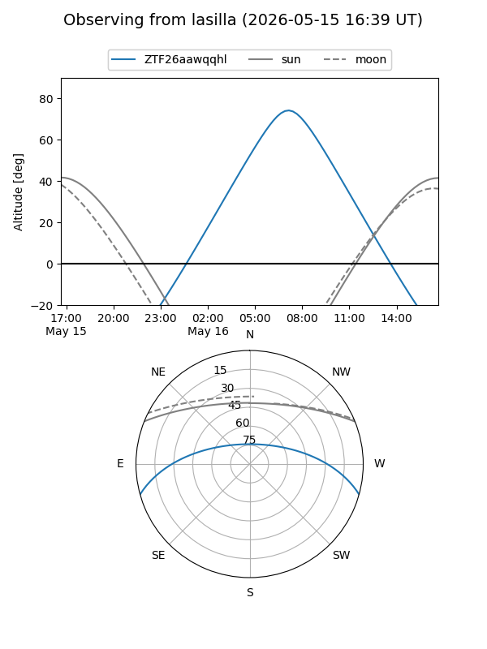
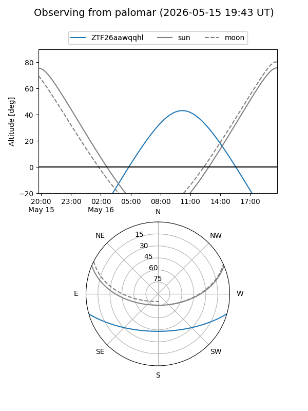

ZTF26aawqqhl
Target ZTF26aawqqhl at 2026-05-16 11:54
Aliases and brokers:
FINK: link
Lasair: link
ALeRCE: link
alt names
ZTF26aawqqhl (ztf,fink_ztf)
Coordinates:
equatorial (ra, dec) = 269.7615,-13.49563
equatorial (HMS+DMS) = 17:59:02.76,-13:29:44.27
galactic (l, b) = (14.9073,+5.14657)
Flags:
Photometry:
last ztfg=19.39
2 ztfg detections
Lightcurve

Visibility


Additional plots